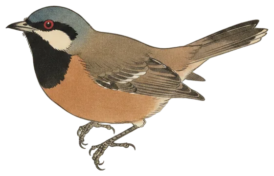

Return
Rufous Whistler back after 34 days
Twelve species and 371 calls in the 24 hours to 9:30 pm, with a summer migrant returning to the air and the Galah marking sixty straight days of being heard.

The Rufous Whistler is back. The bird was heard 44 times between 8:44 am and 2:06 pm today, ending 34 days without a single call. It is one of the most widespread birds around Canberra and a summer migrant to the region, most often recorded in October, November and December.
The whistler's musical calls consist of a lengthy series of ringing notes, and there was plenty of chance to hear them: today's 44 calls put it among the species heard most often in the window. The bird was first picked up at 8:44 am, well after the dawn chorus had begun, and last heard at 2:06 pm.
It arrives in a week when other migrants have also been noted, the Golden Whistler among them, though that bird was heard just four times today.
- Calls
- 44
- First heard
- 8:44 am
- Best call
- 94%
- Days heard
- 3 of 60